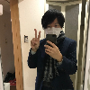

-

-
2019年1月6日にグランドオープンを控えるぺフとそのメンバーを紹介する「オープン・トーク」を行いました。
項目として、各ぺフ・メンバーには、
①自己紹介（ぺフでする事・する理由）
②2018年の良かった事
③2019年に向けてこの３項目を話してもらいました。
当日、時間がいっぱいで私・古川の紹介は省き、終了後ペフ・リーダーのささじま氏と数名だけに話したのですが、その内容をここに載せてもらえる話になりましたので改めて自己紹介させて頂きます。
-
①自己紹介（ぺフでする事・する理由）
他のメンバーは大体アーティストの方ですが、私は一般人で月に１回来てトーク会をしています。やろうと思った理由は、この世でただ一人必要としてくれたささじま氏がいた事とこれしかできないからなのですが、言語化する事は（何でも説明するのは良くない場合もありますが）何かの作品の理解を深めたり、世の中の出来事を把握しやすくしたり、漠然とした事や不安の正体を明確にし、少し生きやすくしたりできる力があるものだと考えています。
トークと言うと知識のひけらかしのように聞こえるかもしれませんが、分かりやすくて面白いものでないと意味がないと思っています。素人の私にはTV、ネット、リアル問わず、トークや解説は難解な映画や美術や哲学、ニッチな分野の歴史などを把握する上でとても役立ってきました。中にはプライスレスと感じる話も多々ありました。
そんな私が他所で面白いと感じたような、できるだけ有意義だったと思ってもらえる話をやっていきたいと考えています。
-
②2018年の良かった事
「老い」
私は今43歳です。90年代ほどではありませんが、若さに価値があるとする風潮がまだ日本には強いと感じますが、本質に目を向けると老いを重ねる方が生きやすいかも、と思えてきました。好きな映画監督でアレハンドロ・ホドロフスキーという90歳近い爺さんがいますが、直近の自叙伝的な作品で、今の爺さんのまま登場し若い頃の自分役に「老いは何ら屈辱ではない。セックス、金、名声、そして自分自身ですら捨てられる」と言うんです。年を取れば執着やしがらみが無くなると簡単に片付けられる話ではあるのですが、煩悩の多い私にはなぜだかこの言葉が残っていて、今の老いを肯定的に受け入れたいと思う気持ちに繋がりました。
去年は今までよりも一番、老いも良いなと感じられるようになりました。それには見方が変わってきたものが５つあります。
・マクロな視点
辛い気持ちになった時、マクロな視点の話はミクロな個の悩みを少し矮小化させる効果があると気づきました。進化の歴史や法則性、周期性は説得力あり、自分がどうせこうだと思っていた事を論破してくれる力があります。「自分と同じような悩みを持った人は過去にもいる」と考えると過去の頭の良い先輩の声に耳を傾けたくなります。参考にすべき人は現世の人でなくてもいいのです。この視点は、仏教を紐解くとより理解しやすかったです。近々、仏教のトークもしてみたいです。
・世間とズレる
最新の哲学を研究されている千葉雅也さんの『勉強の哲学』という本によると、勉強とは世間とズレていくもので、逆にズレないと深められないとあります。そして、考える対象にツッコミ（アイロニー）とボケ（ユーモア）が必要でその最果てを射程に入れて中間領域で面白い、と捉えられる状態が一番良いそうです。昨年、とても為になった本の一冊です。
-
②2018年の良かった事
・情報を見極める
米国と中国のトークで、巨大テック企業の人たちは、その優秀な頭脳を使って自社商品のPVや滞在時間、依存度などの指標を高めていく事に取り組んでおり、最終的にそれはお金儲けや覇権に還元されるという話をしました。今後私たちはますます即効性のあるものや第一印象が良いものに翻弄され、消費行動に結びつけられていくようになると思います。SNSも企業の商品である事を踏まえて情報に接していきたいものです。
・身の丈、健康を自覚
人は低い所から高い所に移った時に幸せを感じ、高い所からちょっと高い所に移ってもあまり感じないそうです。昔のブラック会社での日々や、過去様々な苦渋を受けた人々の立場を理解しようとすれば、確かに何と恵まれているんだと感じます。戦争の事を知れば、戦後の日本に生まれただけで幸せとも思えます。そして健康を損なう事も増えますが、逆に健康時の嬉しさも感じられます。金がある、若さ・美貌がある、良い異性がいる、等に代表されるような世間の幸せが総じて人を幸せにするとは限りません。
・友達はいなくて大丈夫
私の悩みの大半は人間関係、特に関係が濃くなった関係から起こってきました。ペフ・リーダーささじま氏は今回のテーマでも「ズッ友」という言葉を挙げておられ、恵まれていない自分とはやや意見が異なるのですが、私はコアになる友達以外は特に持たない今がわりと幸せです。友達がいた方が良いというのは虚構です。この話は少し説明を要するので、前述の幸せの話と合わせて、最新の幸福論をテーマに今年どこかでやってみたいと思います。
-
②2018年の良かった事
音楽のベスト話にしようと思いましたが、こういう話の方が“人となり”が分かって良いかと思い話してみました。ちょっと堅苦しい話になりましたので、ここで去年の良かった音楽を挟ませてもらいます（ 年間ベスト をまとめた後から知ったものです）。
Joseph Shabason - Anne
カナダ・トロント出身のサックス奏者／コンポーザーの作品。多くの奏者が参加し、実にうまみのある良い演奏が聴けます。アルバムはパーキンソン病と闘うお母さんに捧げられており、彼女の声も使われています。Gigi Masin参加の曲もあります。花ジャケも良い感じで藍色のレコードも綺麗。生活に寄り添ってくれる音楽です。
Christina Vantzou, Echo Collective - At Dawn
フェリシア・アトキンソンは私のフェイバリット・アーティストで毎年boomkatのベストを見ても一番波長が合うのですが、今回その中でこれまでもコラボしていたクリスティーナのソロを見落としていました。John Also Bennettとの「CV&JAB」というタッグ作品も良かったですが、こちらも素晴らしい。ヴァイオリン、チェロ、ヴィオラの弦楽器の鳴りが心を深く沈めてくれます。
-
③2019年に向けて
最後に、2019年、気になっているものと新年どうするか、の話をします。
『デス・ストランディング』（ゲーム）
今年出るかどうか分かりませんが、出たら興味津々な小島秀夫のゲームです。メタルギア・ソリッドもやっていない痴れ者ですが、監督の事は常々気になっておりました。最近ツイートで『2001:キューブリック、クラーク』という『2001年 宇宙の旅』解読本に「この映画こそ自分にとってのモノリスだった」というアツいツイートをされており、大共感で5000円もする本を私も購入してしまいました。年末NetfrixのSFコンテンツ『ブラック・ミラー』で公開された『バンダースナッチ』というゲーム性のある作品も面白かったですが、SFや映画を熟知した人が作るゲーム作品は注目したいです。
-
③2019年に向けて
『君たちはどう生きるか』（映画）
これも今年公開されるか分かりませんが、出たら１ヶ月くらいは籠ってしまいそうです。『風立ちぬ』で最後と思われた宮崎駿の、本当に最後になるかもしれないという作品です（寿命的に）。鈴木プロデューサーとの関係も非常に面白いので、ご存命のうちに味わい尽くすべきかと思います。今は１年のうち使える半分の時間を宮崎駿に費やしても良いとさえ思っています。
2019年も孤独
好きな事を積み上げていくのがマトモな人生だと思うのですが、私はある時期から、自分が好むものを逆に避け、多角的に物事を見たいと思うようになってしまいました。それゆえどの界隈にも属せず、ある分野で仲良くなった人ともすぐ疎遠になる事もあります。しかし異なる立場の人の考え方や弱者側の視点は孤独にならないと見えない事もあります。また、全く別の分野の話と思っていた事が本質では繋がる時があってそういう瞬間は良いものです。そういう訳できっと今年も孤独でしかないので、ぺフにお越し頂き、話しかけて頂けたらとても嬉しいです。